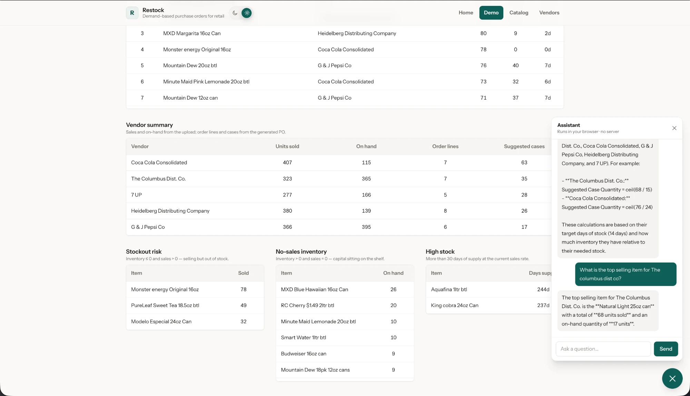
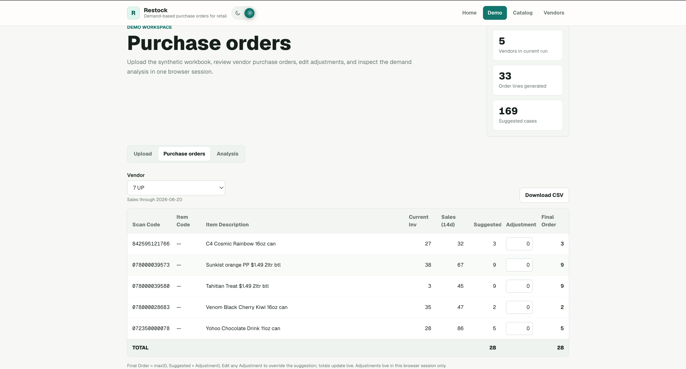
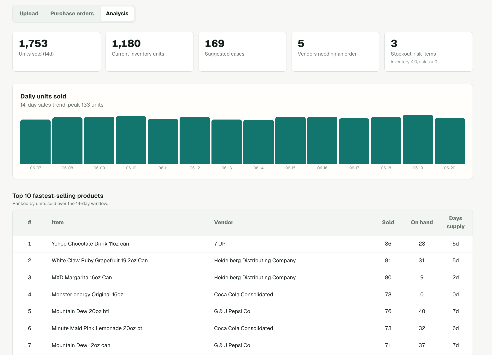
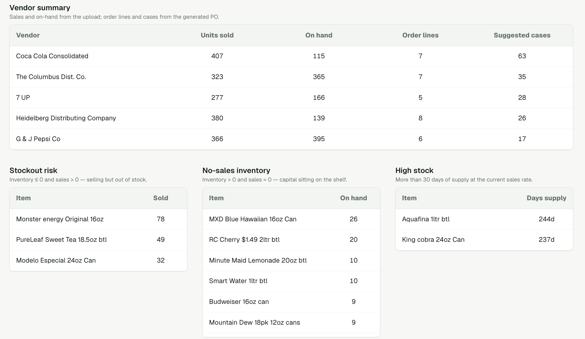

Restock — Live Interactive Purchase Order Demo & AI Chatbot
A live, in-browser web app that turns a retail sales-and-inventory spreadsheet into vendor-ready purchase orders plus an analytics dashboard — a Next.js/React front end over a tested TypeScript engine, deployed publicly so anyone can try it with no install.
Upload the one-click sample workbook and watch it generate real orders.
My involvement: Product owner and builder — defined the business problem, designed the demand formula, and built the entire application (engine, UI, tests, and public deployment).

The opportunity
This is the public, fully sanitized showcase of a private production tool that replaces hours per day of manual, per-vendor order building across convenience stores. Instead of describing the work, it lets anyone — a recruiter or hiring manager — run the actual workflow themselves in the browser: upload a spreadsheet, get vendor purchase orders, adjust them, export a CSV, and explore an analytics view.
The challenges
- The demand math had to mirror how ordering really works in the store — case quantities, per-vendor settings, and linked pack/single relationships.
- It had to run with zero backend so it was safe to share publicly: no database, no login, no real business data.
- The logic had to stay explainable — plain, documented arithmetic, not an AI black box a non-technical reviewer can't trust.
- It still needed a human review step so suggested orders could be adjusted before use.
- The data had to feel realistic while being completely synthetic.
The approach
- Build the purchase-order formula as a pure, tested engine separated from the UI.
- Use a browser-only architecture — everything runs client-side and state resets on refresh, so there is nothing to leak and nothing to breach.
- Keep the formula documented and explainable, with no machine learning.
- Add an analytics view to surface what's selling, what's at risk of stocking out, and what's overstocked.
The execution
- Built with Next.js 16 / React 19 / TypeScript / Tailwind CSS v4 (light & dark themes).
- Client-side Excel parsing with validation (extension, size, required sheets and columns) before any calculation runs.
- Per-vendor purchase-order engine using daily sales rate, target days, inventory credit, and suggested cases — including linked single → pack rollups so loose singles roll into their orderable case.
- Editable review table where any line can be adjusted and the Final Order and totals recompute live, plus CSV export.
- Analysis view: headline KPIs, a 14-day daily-sales trend, top sellers, a per-vendor summary, and stockout / no-sales / high-stock risk lists.
- A
node --testsuite covering the PO formula, linked rollups, required columns, and analytics. - Deployed on Vercel from a public GitHub repository.
The result
- Anyone can try the real workflow live in seconds — no install, no signup.
- Demonstrates the exact production engine, fully sanitized of private data.
- An AI chatbot assistant that runs serverless, in-browser.
- Shows end-to-end ownership: business problem → demand formula → UI → tests → public deployment.
Screenshots



Tools used
- Core stack: TypeScript, JavaScript, React 19, Next.js 16, WebLLM
- Styling: Tailwind CSS v4, CSS-variable light/dark theming
- Data: read-excel-file (browser parser), SheetJS (dev-only), XLSX, CSV
- Testing & build: Node built-in test runner (
node --test), ESLint - Deploy: Vercel, GitHub